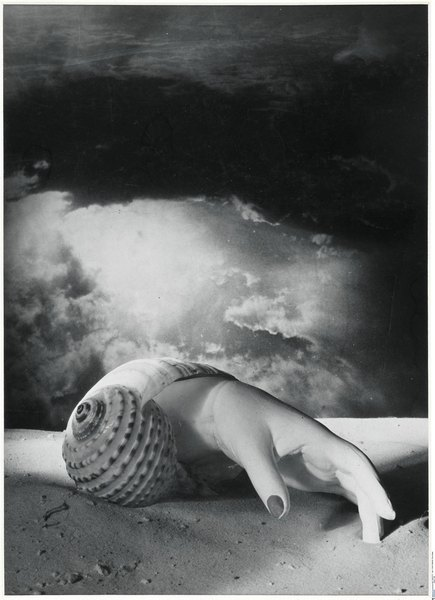
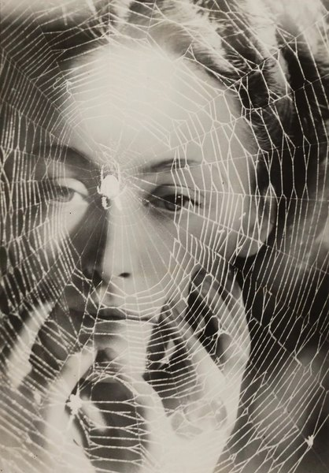

CRVI001487Man Ray - Black and White (Noire et blanche)
1926
1926

CRVI001489Max Ernst - Self-Portrait
1909
1909

CRVI001548René Magritte - La durée poignardée (Time Transfixed)
1938
1938

CRVI001549Joan Miró - The Vegetable Garden with Donkey
1918
1918

CRVI001550Yves Tanguy - Through Birds, Through Fire, but Not Through Glass
1943
1943

CRVI001551Yves Tanguy - Indefinite Divisibility
1942
1942

CRVI001552Yves Tanguy - The Rapidity of Sleep
1945
1945

CRVI001553André Masson - L'homme emblématique
1939
1939

CRVI001554Leonora Carrington - El mundo mágico de los mayas
Detail of the mural · 1964
Detail of the mural · 1964

CRVI001555Remedios Varo - Still Life Reviving (Naturaleza muerta resucitando)
1963
1963

CRVI001556Remedios Varo - Creation with Astral Rays
1955
1955

CRVI001557Remedios Varo - Creation of the Birds
1957
1957

CRVI001558Remedios Varo - Simpatía (La rabia del gato)
1955
1955

CRVI001559Dorothea Tanning - Voltagem
1942
1942

CRVI001560Dorothea Tanning - Eine Kleine Nachtmusik
1943
1943

CRVI002446Roberto Matta - Comment une conscience se fait univers (peut être)
1992
1992

CRVI002447Roberto Matta - Ochre construction with hooked forms

CRVI002448Roberto Matta - The Vertigo of Eros
1944
1944

CRVI002449Roberto Matta - Grey field with red mechanical figures

CRVI002450Roberto Matta - Magenta and green burst

CRVI002451Roberto Matta - How-Ever
1947
1947

CRVI002452Roberto Matta - Yellow and green architecture of figures

CRVI002453Roberto Matta - Violet field with white cubes

CRVI002454Roberto Matta - Grey ground with orange figures

CRVI002455Roberto Matta - Listen to Living (Écoutez vivre)
1941
1941

CRVI002456Roberto Matta - Figures around a lit basin

CRVI002457Roberto Matta - The Unthinkable

CRVI002458Roberto Matta - Red and yellow ground with pale figures

CRVI002459Roberto Matta - Blue ground with three grey figures

CRVI003185Victor Brauner - Composition with Portrait
1935
1935

CRVI003186Victor Brauner - The Surrealist

CRVI003187Victor Brauner - Composition with Portrait
1930-1935
1930-1935

CRVI003194Dora Maar - Sans titre (Main-coquillage)
1934
1934

CRVI003195Dora Maar - The Years Lie in Wait for You
1935
1935